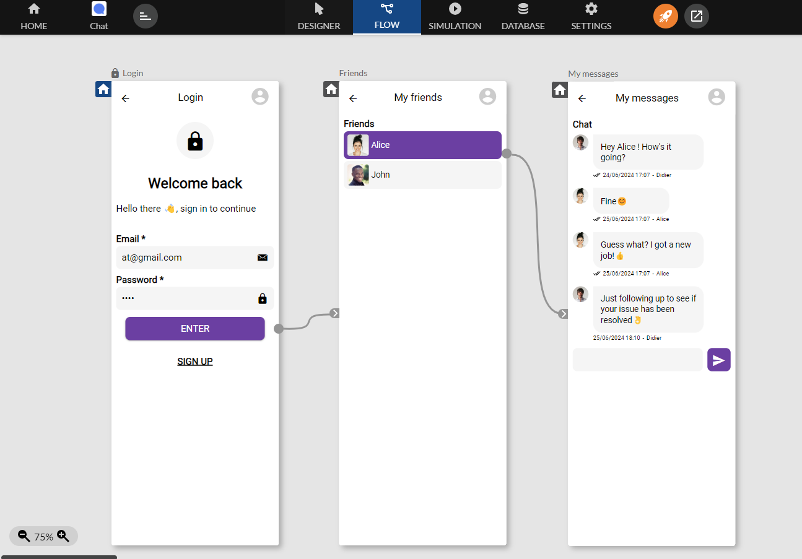
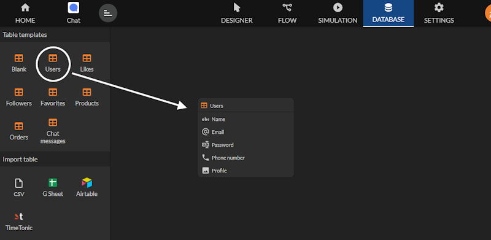
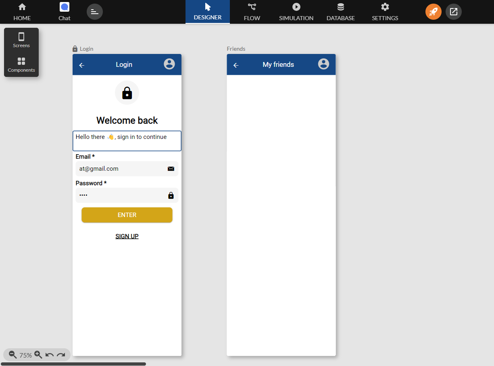
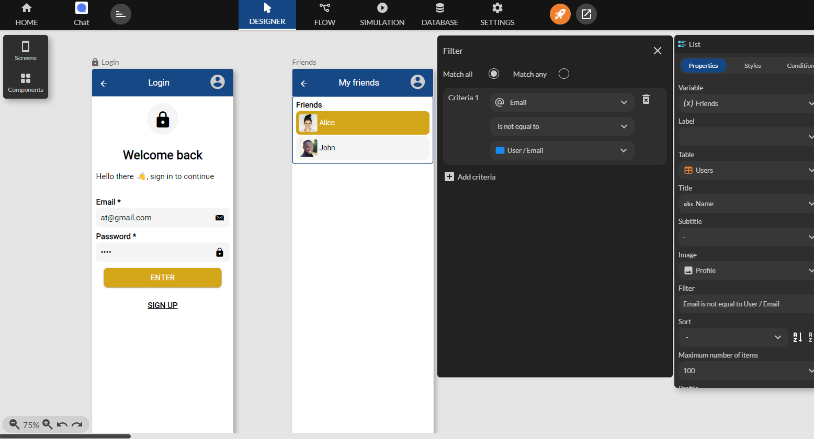
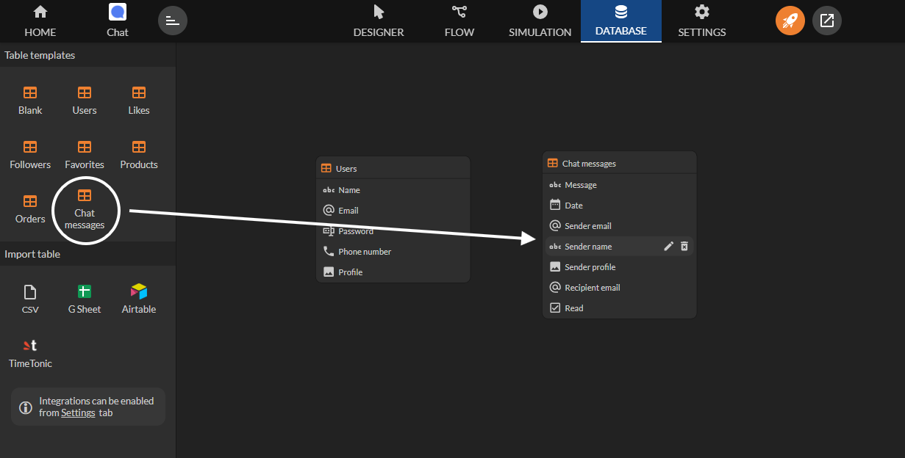

Chat
This guide explains how to set up and configure a Chat component that enables message exchange between 2 authenticated users.

Setting Up Authentication
Before you begin, it is essential to set up authentication to ensure that only authorized users can exchange messages with other users.
Creating the Users Table
From the Database tab, drag a Users table into the workspace. Zyllio will automatically create the required columns and also 2 sample users. These users are useful for testing and can later be modified or deleted.

You can keep tables that define columns in English. However, screens can still be displayed in your language by using the Label property available in all components.
Creating the Authentication Screen
From the Designer tab, drag a Login screen into the workspace while selecting the Users table. You get this ready-to-use screen:

Then a second Header screen that we will name Friends:

Displaying the Friends List
Connect the Enter button, which handles authentication, to the Friends screen. That way, if authentication succeeds, the mobile app will display the linked screen (here Friends):

Add a List component in the Friends screen (or any other list component such as Grid or Carousel) using the Users table:

Define a filter on this List component to exclude the authenticated user using this criterion: Email is not equal to User/Email. Email refers to the Email column of the Users table and User/Email is the email of the authenticated user (User):

Creating the "My Messages" Screen
Creating the Chat messages Table
You need to create a table to store messages written by users. To do this, from the Database tab, drag the Chat messages table into the workspace:

Creating the Chat Component
Create a screen named My messages and drag a Chat component from the components list in the Lists section, selecting the Chat messages table. Then link the 2 screens as below:

The Chat component shows no message because the table is empty.
Filtering Messages
By default, the Chat component shows all messages sent and received by the authenticated user. Here the Chat component should display only the messages exchanged with the user selected in the Friends screen. To do this, set the Filter by recipient email property to the value Friends/Email, which is the selected friend in the Friends screen.
Writing Messages
Optionally, to allow message writing you need to use the Message component in the Form fields section, again selecting the Chat messages table. In this tutorial, the authenticated user sends a message to the friend selected in the Friends screen. You must therefore fill in the Recipient email property: